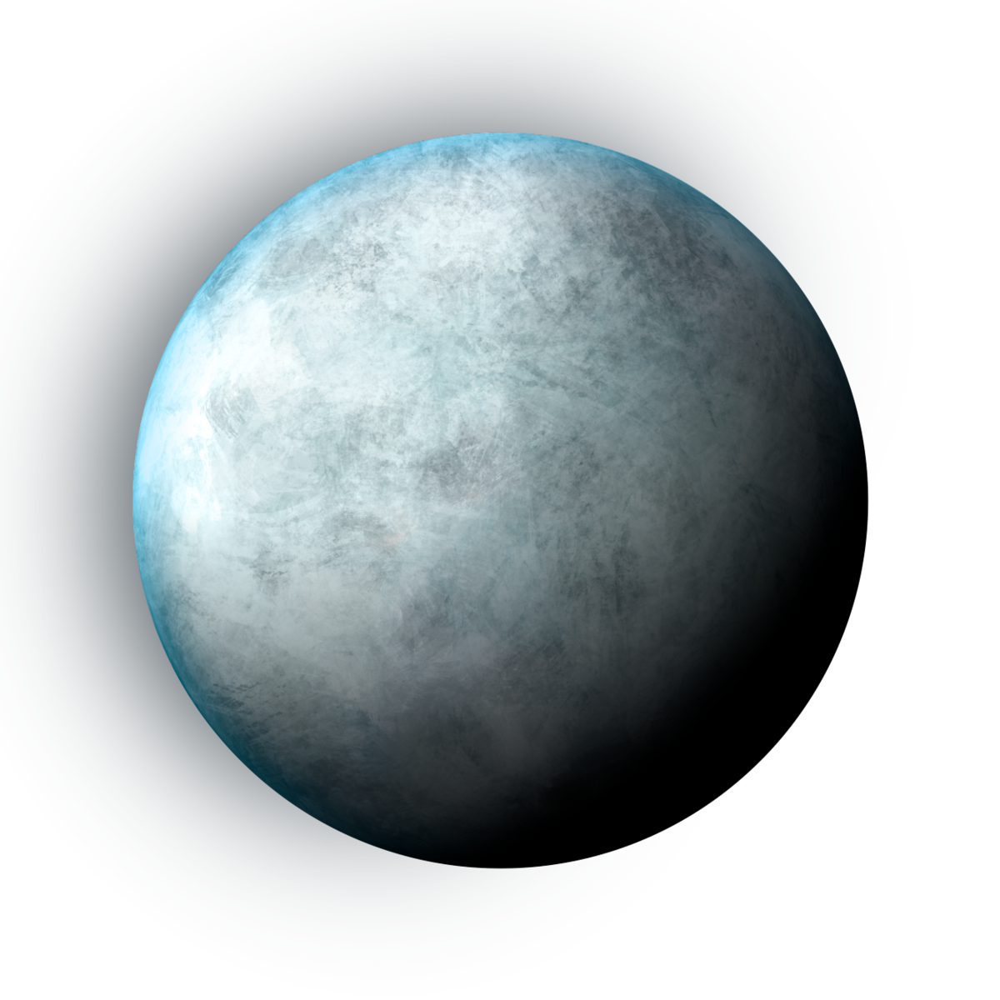
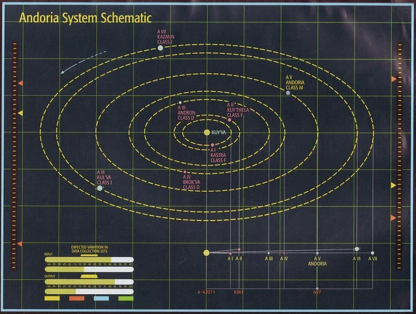

Andoria
Andoria or Andor was an inhabited moon orbiting a ringed gas giant of the Andorian system. Andoria was the homeworld of the Andorians and the Aenar, and was an important world to the United Federation of Planets. For those that want to know more

Location
Andoria orbited the star Andoria, and was located in the Alpha Quadrant. Andoria was located in a neighboring system to Vulcan. Regulus, which was relative to both planets, laid just outside Andorian sensor range. The planet Weytahn, located on the frontier between the Vulcan and Andorian systems was located "a dozen light years" from Earth. The Andorian Empire occupied space between Babel and Tellar Prime
